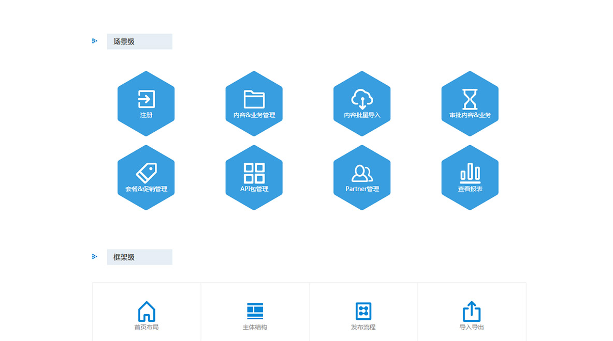

Web Pages Design
Independent Work in UCD Center in Huawei Technologies Co., Ltd. Nanjing Institution
Picture reading age has come, present readers prefer reading pictures than words. Quick reading requires to absorb a large amount of information in a limited time. Visual representation offers a faster approach of transmitting information, and are therefore appealing for those with busy lifestyles. Visual literacy is a new and important field, and websites must present clearer and more direct visuals to be successful. I tried to design typical example of strong “picture reading” web pages, attracting readers with instantly understandable visual information.
To make web pages look more clean and clear, I used an integrated picture and I omitted all boundaries around pictures. I also simplified and unified icons by color and shape, shortened words and put them on top of visuals, all of which can be described as flattening the design to keep the interface concise and reducing any obstacles to users.
